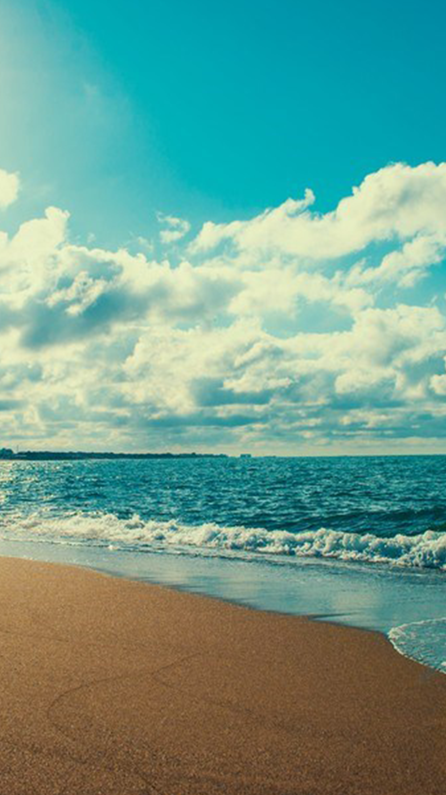
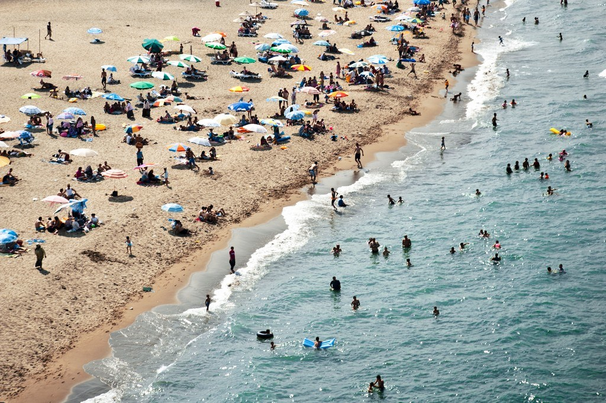
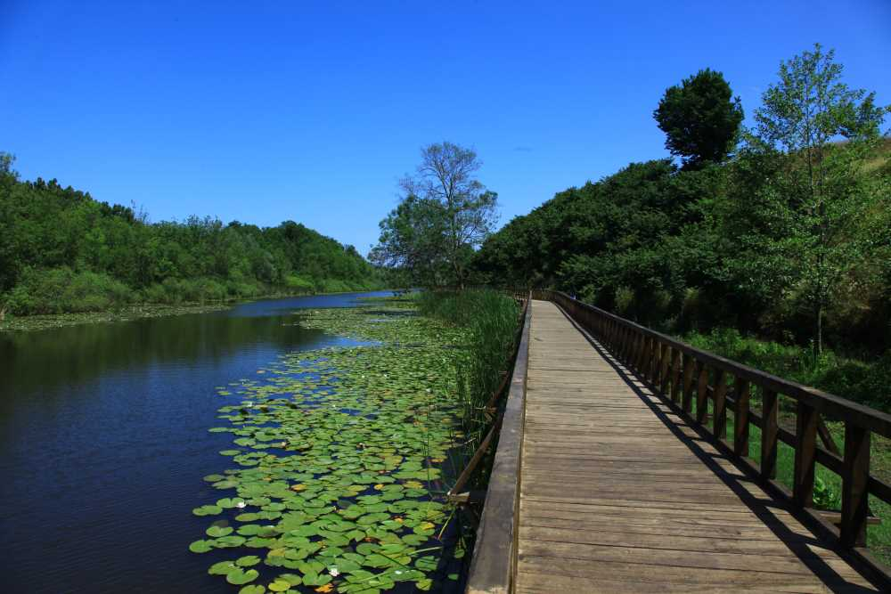
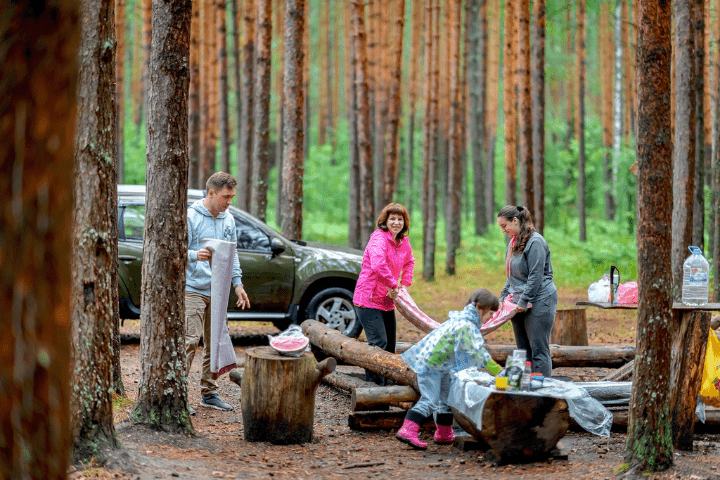
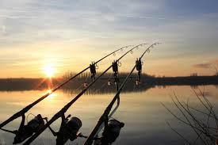
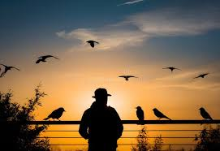
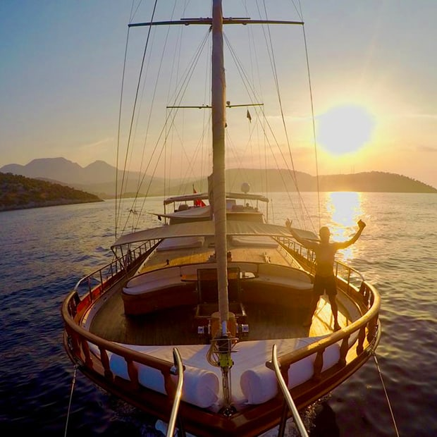
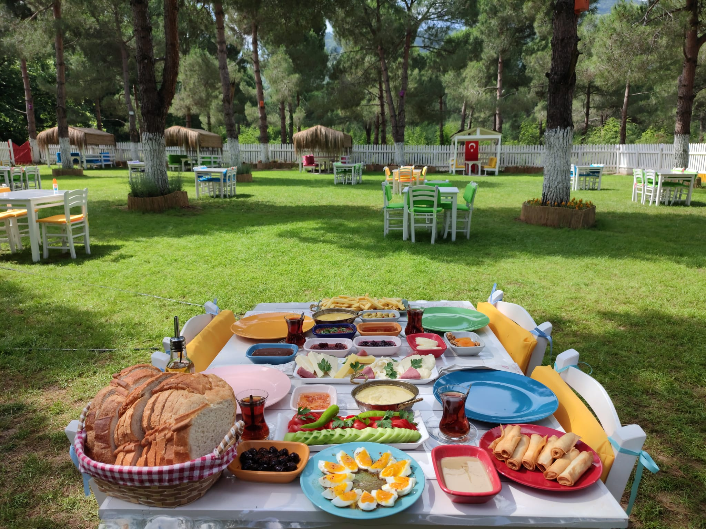
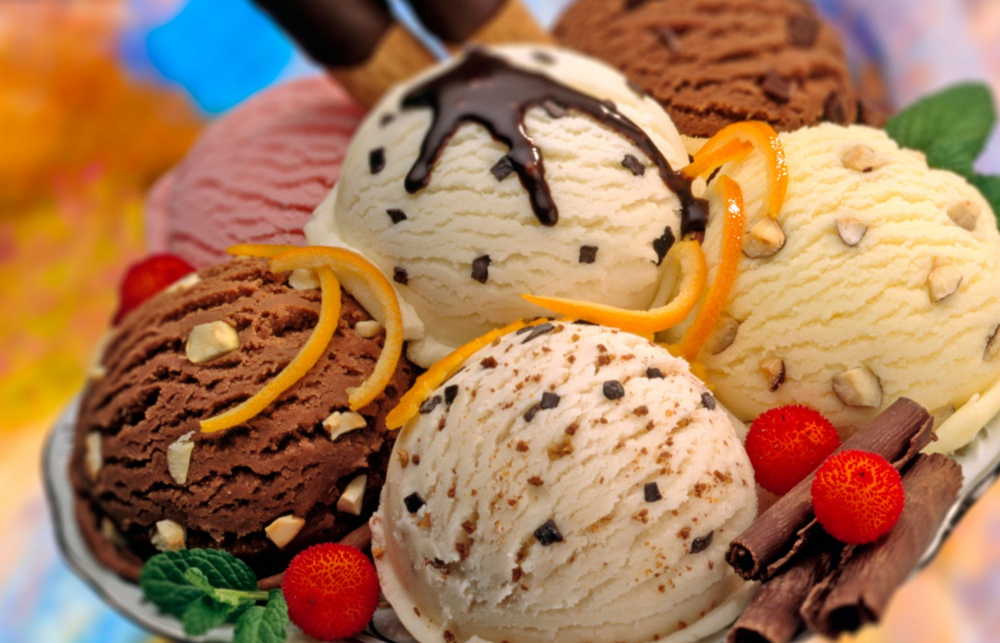
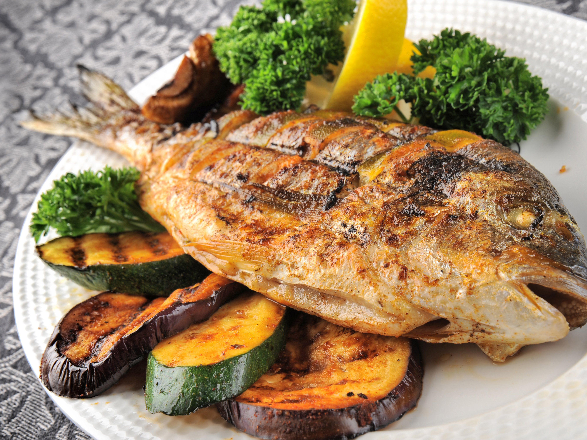

Karasu Beach
Physical Accessibility for People with Disabilities: Good
One of the longest beaches in Turkey. It features wide walking paths, ramps, and accessible restrooms in some areas. Suitable for wheelchair users.
Karasu – Where the Black Sea's Waves Kiss Pristine Shores, Where Golden Sands Meet Lush Forests, And Every Sunset Paints a New Adventure. Breathe in the Salt Air, Savor Fresh-Caught Feasts, and Lose Yourself in Sakarya's Coastal Paradise.

Golden sandy beaches stretch along pristine shores, perfect for sunbathing and swimming. Lush green forests and unique wetlands invite peaceful walks and nature exploration. Fresh seafood flavors dominate local cuisine, served in charming seaside eateries. The gentle rhythm of waves creates a calming atmosphere year-round. Summer brings a lively yet relaxed energy to the coastal town. Well-maintained promenades offer scenic strolls with refreshing sea breezes. This tranquil destination blends natural beauty with simple, authentic charm.

Enjoy Karasu's 7km golden coastline with gentle waves perfect for swimming. The beaches feature soft sand ideal for sunbathing, beach volleyball, and sandcastle building. Several beach clubs offer sun loungers and umbrellas for rent, while free public areas maintain the authentic Turkish seaside atmosphere.

Discover Acarlar Longoz Floodplain Forest, one of Turkey's most unique ecosystems with wooden walkways through wetlands teeming with birdlife. The Maden Stream trail offers shaded paths along crystal-clear waters, perfect for spotting otters and rare plant species. Guided tours are available for deeper ecological insights.

Pitch your tent at designated floodplain campsites surrounded by singing frogs and fireflies, or choose beachfront spots for sunrise views. Numerous picnic areas provide stone barbecues and wooden tables. The municipality maintains clean facilities with drinking water access throughout the recreation zones.

Join morning fishing trips where locals catch anchovies and bonito, or try your luck from the 300m-long pier. Equipment rentals are available, and the fishing cooperative sells fresh daily catches. Autumn brings the exciting "lüfer" (bluefish) season, celebrated with waterfront festivals.

Karasu’s Acarlar Longoz Floodplain Forest is a paradise for bird enthusiasts, home to over 150 species including rare purple herons and white-tailed eagles. Spring and autumn migrations bring spectacular sightings, while wooden observation decks provide perfect vantage points. Local guides offer dawn tours when bird activity peaks, and the nearby visitor center has binocular rentals and species checklists.

Depart from Karasu Marina for a 2-hour cruise along the coastline, featuring stunning views of the Sakarya River meeting the Black Sea. Summer evenings often include live folk music and tastings of regional wines or çay (tea). Dolphins frequently accompany boats near the estuary, creating unforgettable photo opportunities.These alternatives better highlight Karasu’s natural and cultural strengths while maintaining variety in your activity offerings.



Karasu’s culinary scene delights with its unique specialties, starting with the lavish village breakfast—a rustic spread of farm-fresh eggs, artisanal cheeses, olives, and honey served in charming cafes near the floodplains. For seafood lovers, the Black Sea fish dishes shine, featuring locally caught anchovies, turbot, and bonito simply grilled or baked with regional herbs. Complete your gastronomic journey with Karasu ice cream, a stretchy, mastic-flavored ice cream that’s famously refreshing after a sunlit beach stroll.
Physical Accessibility for People with Disabilities: Good
One of the longest beaches in Turkey. It features wide walking paths, ramps, and accessible restrooms in some areas. Suitable for wheelchair users.
Physical Accessibility for People with Disabilities: Limited
The walking paths are made of wooden platforms. While some sections have ramps, extended walking routes can be challenging for individuals with mobility issues. Accessibility is partial and could be improved.
Physical Accessibility for People with Disabilities: Good
Flat-surfaced walking areas and open-air seating are available. Ideal for spending time by the sea. Vehicle access is also convenient.
Physical Accessibility for People with Disabilities: Good
The park includes ramps, wide pathways, and seating areas. Picnic zones are also wheelchair-accessible.
Physical Accessibility for People with Disabilities: Limited
These areas have rough, uneven terrain with soil paths and inclines, making access very difficult for those with mobility challenges.